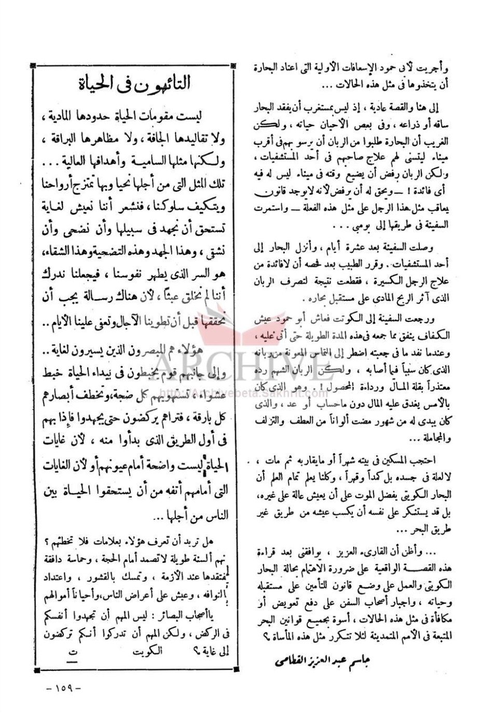
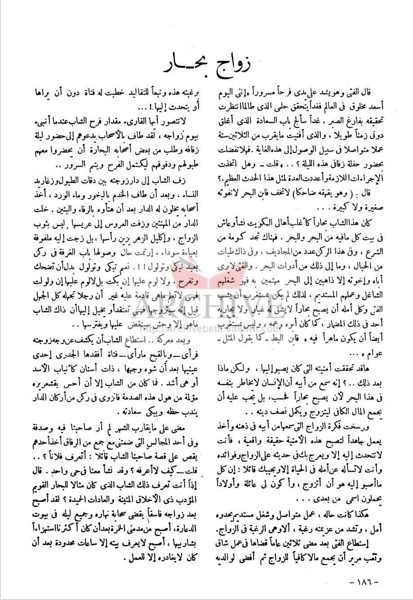
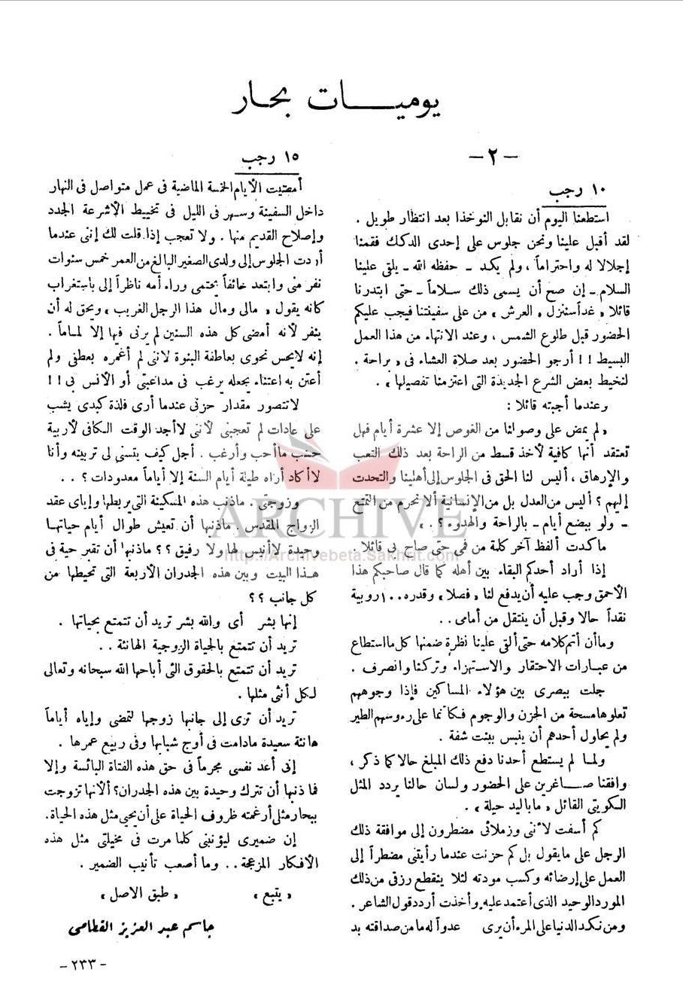
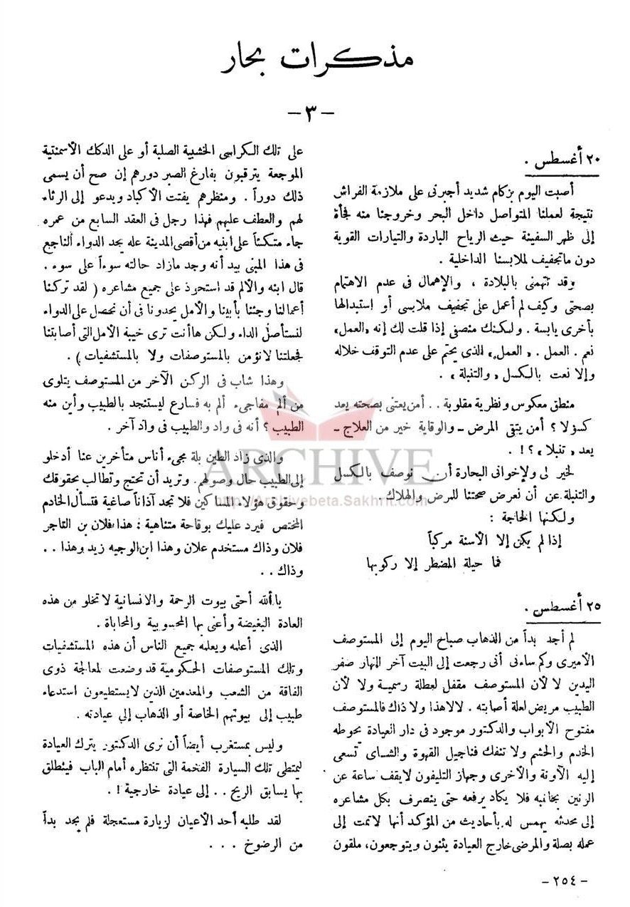
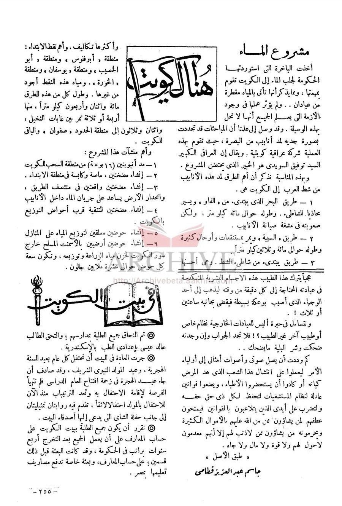

1948, Al-Ba’tha volume 2 · Magazine pages, Al-Ba’tha, volume 2 (1948), reprinted by the Center for Research and Kuwaiti Studies, Kuwait, 1997
Jassim Al-Qatami’s writing in Al-Ba’tha, 1948: the girls’ mission, Kuwait and industry, and his sailor stories
What it is
Articles signed by Jassim Abdulaziz Al-Qatami while he was a student at Kuwait House in Cairo. 1. «The Girls’ Mission» (February 1948) argues for sending Kuwaiti girls to study abroad. 2. «A Blessing from Heaven» (July 1948) and «Kuwait and Industry» (September 1948) are on Kuwait’s future after oil. 3. His sea stories follow the life of Kuwaiti sailors: «A Sailor’s End» (August 1948), «A Sailor’s Marriage» (September 1948), and «A Sailor’s Diary» in three parts (October, November and December 1948).
Why it matters
Jassim’s own early writing, printed under his full name, including the sea stories that later writers name as pioneering Kuwaiti short stories.
Page copies









Sources
Al-Ba’tha, volume 2 (1948), reprinted by the Center for Research and Kuwaiti Studies, Kuwait, 1997, pages 43, 134, 158, 159, 186, 187, 202, 203, 233, 254 and 255
How this text was made: Pages 87, 107 and 229 of this volume, also listed under Jassim in the index, were not sent.
Open in the interactive site